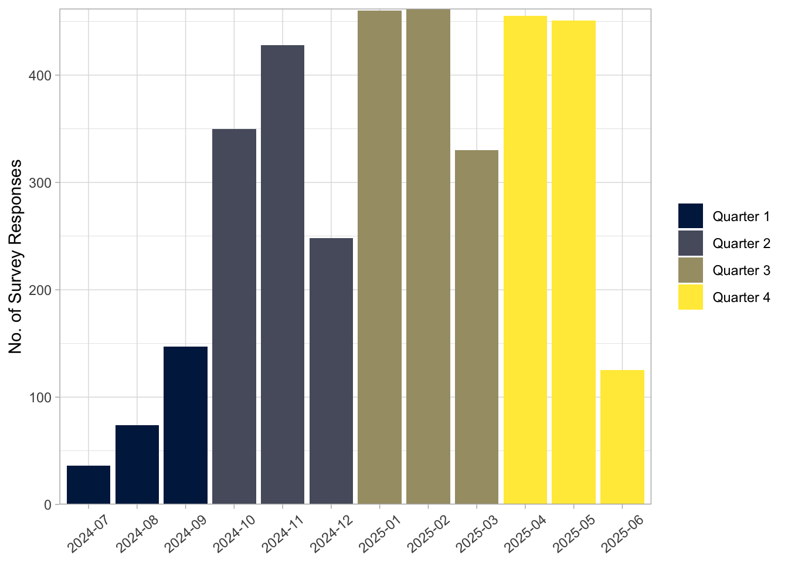
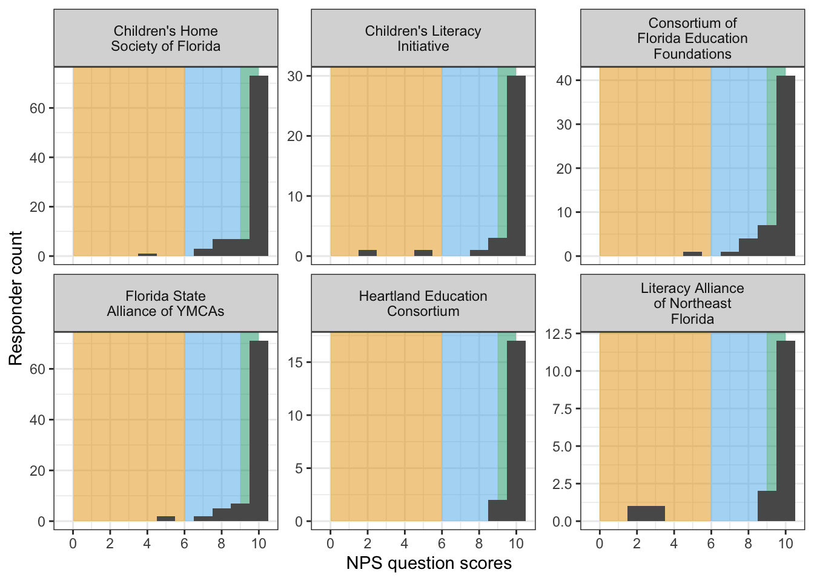
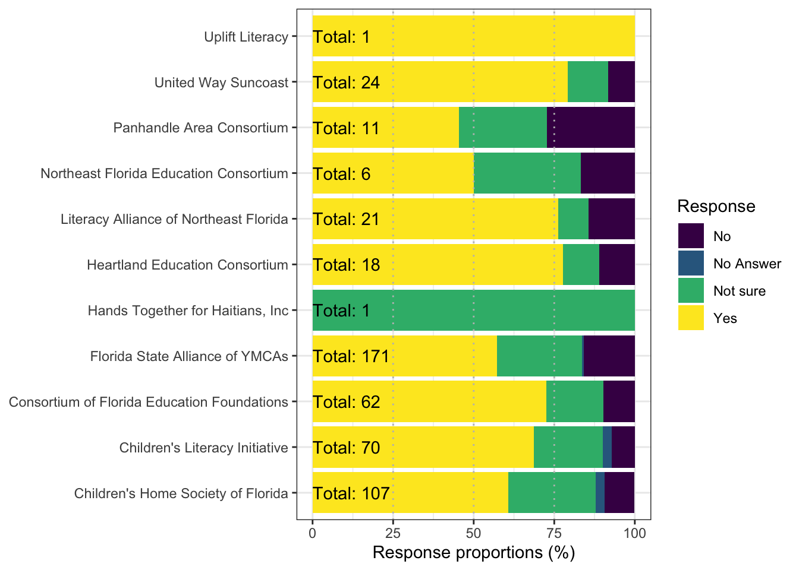

Regional Partner Family Quarterly Report 2024-25 (Quarter 4)
DATA OVERVIEW
NPS Score: 86.15
Quarter 4 Overview
- Total survey respondents: 1031
- 325 (31.5%) respondents answered the NPS question.
- 742 (70%) respondents answered 50% or more of the survey questions.
- Overall NPS: 86.15
- Highest NPS: 100 By: Hands Together for Haitians, Inc, Heartland Education Consortium
- Lowest NPS: 0 By: The Lucy Project
- The month with the most responses was Apr with 455 responses.
Quarter 4 compared to the previous Quarter
- There were 221 less respondents.
- The NPS score saw a increase of 0 (0%) (Table 1).
| Total Survey Respondents | Response rate of NPS question(%) | Net Promoter Score | Quarter |
|---|---|---|---|
| 257 | 17.1 | 90.91 | 1 |
| 1026 | 28.7 | 82.99 | 2 |
| 1252 | 31.2 | 86.15 | 3 |
| 1031 | 31.5 | 86.15 | 4 |
Additionally across the 13 regional partners, the distribution of these respondents to the NPS question and the NPS for each partner in Q3 are as follows:
| Regional Partner | Survey Takers | Response rate to NPS question (%) | NPS |
|---|---|---|---|
| Hands Together for Haitians, Inc | 2 | 50.0 | 100.00 |
| Heartland Education Consortium | 38 | 50.0 | 100.00 |
| United Way Suncoast | 34 | 26.5 | 88.89 |
| Florida State Alliance of YMCAs | 289 | 30.1 | 87.36 |
| Consortium of Florida Education Foundations | 131 | 41.2 | 87.04 |
| Children's Home Society of Florida | 218 | 41.7 | 86.81 |
| Children's Literacy Initiative | 120 | 30.0 | 86.11 |
| Literacy Alliance of Northeast Florida | 48 | 33.3 | 75.00 |
| Panhandle Area Consortium | 21 | 33.3 | 71.43 |
| Uplift Literacy | 4 | 75.0 | 66.67 |
| The Lucy Project | 2 | 100.0 | 0.00 |
| Northeast Florida Education Consortium | 8 | 0.0 | NA |
| Principle Life Family Resource Center, Inc | 2 | 0.0 | NA |
Q4 Data Dive
Details on NPS across regional partners
The frequency of the possible answers selected, ranging from 0 to 10, for the NPS question across the six largest regional partners (based on respondent numbers) are shown in the figure below for Q2.

While most people selected 10 for the NPS question certain regional partners had higher frequencies of passive scores (6-9, bars in the blue region of Figure 2). Detractors (0-6) were sparse but still appeared in almost all regional partner events.
Details on how likely respondents would enroll their child in NWRI
Out of all responses, 47.7% (492 respondents) did not have a child enrolled in NWRI.
When these 492 respondents were asked if they would consider enrolling their child the responses were as follows:
Note! We auto-detected their responses by matching key words to categorize responses into several groups. Because this approach relies on key words matching not all the responses could be properly assigned a category.
| Reason | No. of responses |
|---|---|
| Doesn't qualify or not eligible | 12 |
| Explicitly mentioned aged out | 6 |
| Explicitly mentioned no children | 1 |
| Unmatched responses | 22 |
Across regional partners most respondents without an enrolled NWRI child are likely to recommend NWRI. However certain regional partners have a proportion of their respondents saying they were: unsure, preferred not to answer, or they were not likely to recommend NWRI. Figure 3 shows which partners may have higher proportions of these respondents (color in purple).
